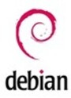

Obtenga ayuda utilizando el sistema operativo Debian por parte de
nuestros expertos.
Que es Debian?
Debian es un sistema operativo de código abierto basado en el núcleo
Linux. Se caracteriza por su estabilidad, seguridad y un compromiso
estricto con los principios del software libre. Es ampliamente
utilizado en servidores y estaciones de trabajo, y es la base de
muchas otras distribuciones de Linux populares, como Ubuntu. Debian
se destaca por su sistema de gestión de paquetes avanzado, llamado
APT, que facilita la instalación y actualización de software en el
sistema.

Temas
Te damos la bienvenida a nuestra sección de temas de Debian, en
la que encontrarás una amplia variedad de recursos y guías para
explorar y dominar Debian. Esta distribución de Linux es
considerada una de las más respetadas y versátiles. Nuestra
sección está organizada con información detallada y tutoriales
prácticos sobre diversos aspectos de Debian. No importa cuál sea
tu nivel de experiencia, esta sección está diseñada para atender
tus necesidades.
Introduccion a Debian - Navegacion dentro del entorno
Introduccion a Debian
En esta sección, te presentaremos una de las distribuciones de
Linux más destacadas: Debian. Aprenderás sobre sus características
únicas que la diferencian de otras distribuciones y te
familiarizarás con sus versiones principales: "stable," "testing,"
y "unstable." Al comprender las diferencias entre estas versiones,
obtendrás una visión general de lo que Debian tiene para ofrecer.
¡Vamos a empezar a explorar juntos!
Navegacion dentro del entorno
En esta sección, te mostraremos cómo sacar el máximo provecho al
entorno de Debian. Descubrirás cómo acceder de forma rápida a las
aplicaciones y archivos relevantes en el entorno de escritorio
(como GNOME), a navegar y buscar los archivos y carpetas
necesarios para tu trabajo, y a personalizar el entorno de acuerdo
a tus preferencias individuales. Adquirir estas habilidades
mejorará tu productividad y comodidad al utilizar Debian.
¡Comencemos!